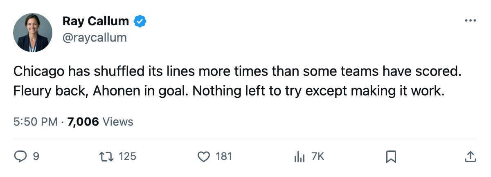

Morning Skate Notes: Fleury Returns, Ahonen Takes the Crease, and Chicago Reshuffles Again
Five names out, five in, and the Blackhawks are still 25 points with a 3-15 home record
 Ray CallumSenior correspondent · Home Ice Network
Ray CallumSenior correspondent · Home Ice Network
 Theoren Fleury86 [296] is back. Ari Ahonen89 [1225] is in goal.
Theoren Fleury86 [296] is back. Ari Ahonen89 [1225] is in goal.  Chicago Blackhawks made its latest roster revision in the lineup released this edition, returning Fleury to the ice, promoting Ahonen over
Chicago Blackhawks made its latest roster revision in the lineup released this edition, returning Fleury to the ice, promoting Ahonen over  Jocelyn Thibault87 [991], and removing five names from the dress.
Jocelyn Thibault87 [991], and removing five names from the dress.
The Blackhawks are 6-18-7 with 25 points, dead last in the Western Conference. They are 3-15 at home, tied with  San Jose Sharks for the fewest home wins in the league. The club has changed its lines and its goaltender and its defense pairs all season without a winning month.
San Jose Sharks for the fewest home wins in the league. The club has changed its lines and its goaltender and its defense pairs all season without a winning month.
Five out, five in
Fleury slots onto the H3 line and left wing of the first power-play unit after missing time with a foot injury. Louie DeBrusk67 [216] returns to a 4th-line center spot after dressing in zero games between editions.  Nolan Pratt71 [796] and
Nolan Pratt71 [796] and  Bryan Muir67 [689] are newly in the lineup.
Bryan Muir67 [689] are newly in the lineup.
 Ian Moran66 [677],
Ian Moran66 [677],  Ryan VandenBussche65 [1032], Shawn Thornton66 [574] and Thibault are out. Deron Quint75 [808] is on the injured list with a hand, targeted to return January 9.
Ryan VandenBussche65 [1032], Shawn Thornton66 [574] and Thibault are out. Deron Quint75 [808] is on the injured list with a hand, targeted to return January 9.
The crease rotates
Ahonen has 17 appearances on the season. Thibault has 19. The two split 36 appearances across 34 team games; neither pulled far enough ahead to end it, so the coach ended it. Ahonen gets the G1 spot.
Three games before the year turns
Chicago Blackhawks hosts  Minnesota Wild on December 26, plays at
Minnesota Wild on December 26, plays at  St. Louis Blues on December 28, and finishes the year at
St. Louis Blues on December 28, and finishes the year at  Los Angeles Kings on December 30. Minnesota is 9-13-6. St. Louis is 20-7-4 and first in the Central. Los Angeles is 6-18-7 and trails Chicago by 2 points at the bottom of the conference.
Los Angeles Kings on December 30. Minnesota is 9-13-6. St. Louis is 20-7-4 and first in the Central. Los Angeles is 6-18-7 and trails Chicago by 2 points at the bottom of the conference.
Twenty-five points in 34 games leaves one thing to care about: the next opponent. Minnesota arrives on Monday. Fleury lines up on the first power play unit. Ahonen starts. If this is more than a Tuesday reshuffle, it'll show by the first intermission.
